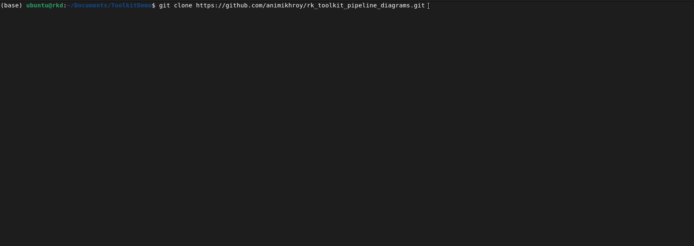

Installing the R-K Toolkit and Usage
Installation
The R-K Toolkit depends on a few scientific libraries, which come preinstalled with environments like Anaconda.
The R-K Toolkit also depends on nevergrad library which can be installed via pip as below.
pip install nevergrad
More information about nevergrad can be found at their official Git Repository .
The R-K Toolkit can be installed using pip from the toolkit folder as given below.
This will install the R-K Toolkit package. A virtualenv may also be used to install for a specific project.
The R-K Toolkit can also be installed from the main project repository through the following steps:
Clone the repository via the following command:
git clone https://github.com/animikhroy/rk_toolkit_pipeline_diagrams.git
Change to the repository folder via the terminal/command prompt:
cd rk_toolkit_pipeline_diagrams
As R-K Toolkit is a submodule, we need to pull the submodule to our local repository. This is done by the following command:
git submodule update --init --recursive
Change to the R-K Toolkit directory (located as /01_rk_toolkit) via the terminal/command prompt:
cd 01_rk_toolkit
[Optional] Before installing, if we want to install in a virtual environment, ensure that we are in the virtual environment, else create one.
Install the R-K toolkit using
pipas mentioned above.
The full installation process:
{kind=link}
Usage
The following is an example usage from the Jupyter notebooks:
..image: